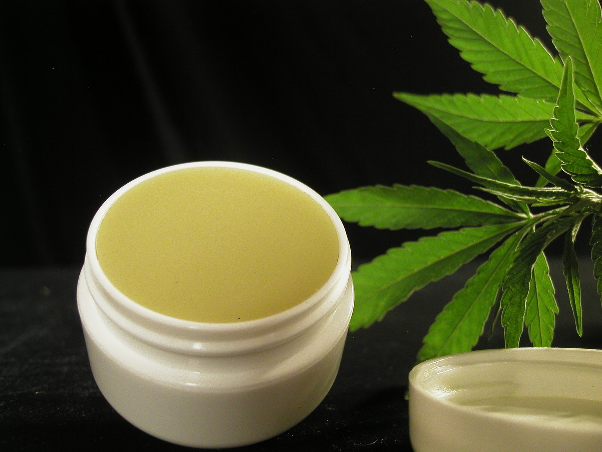
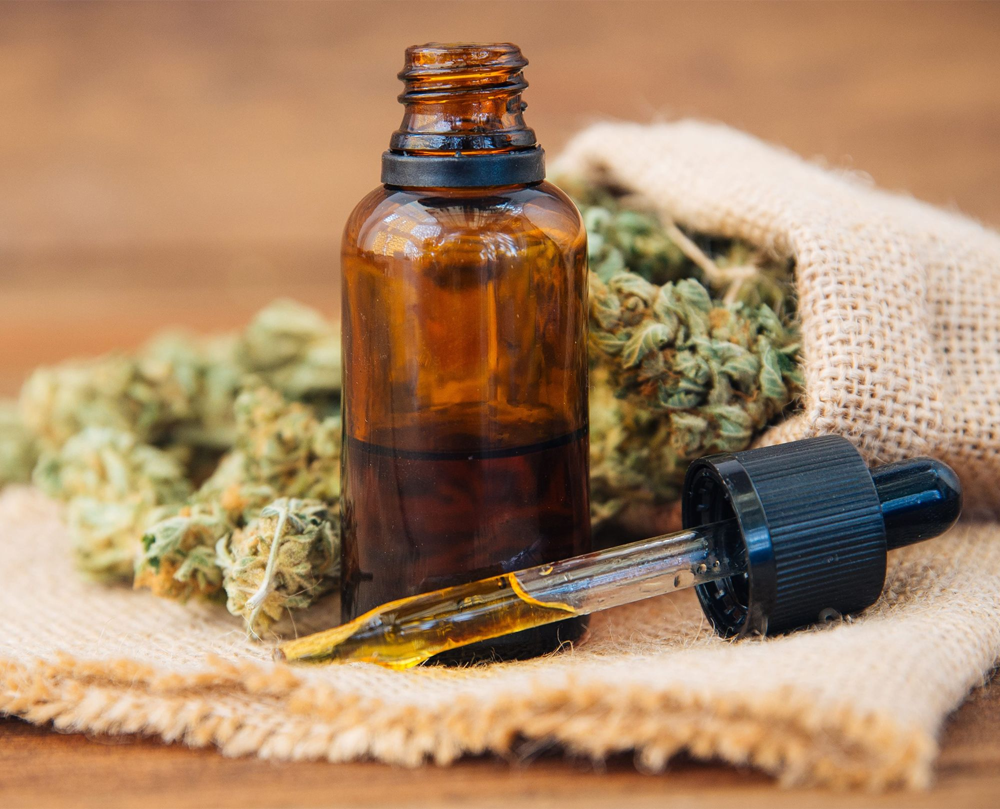
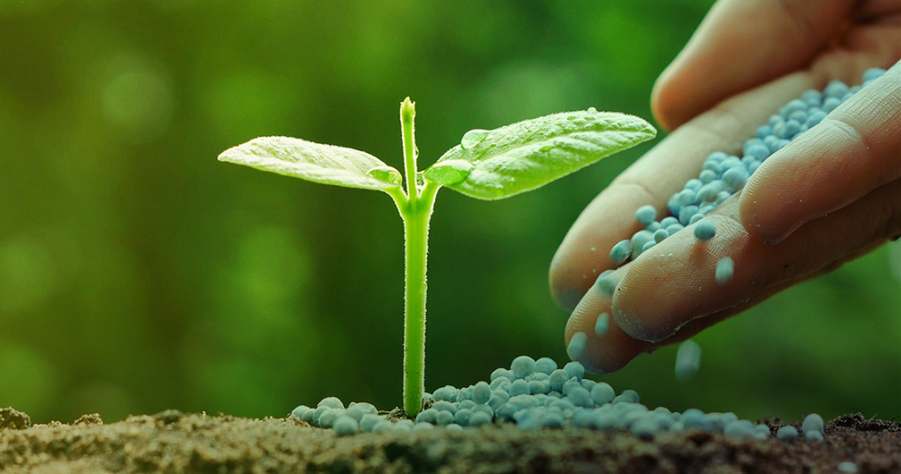
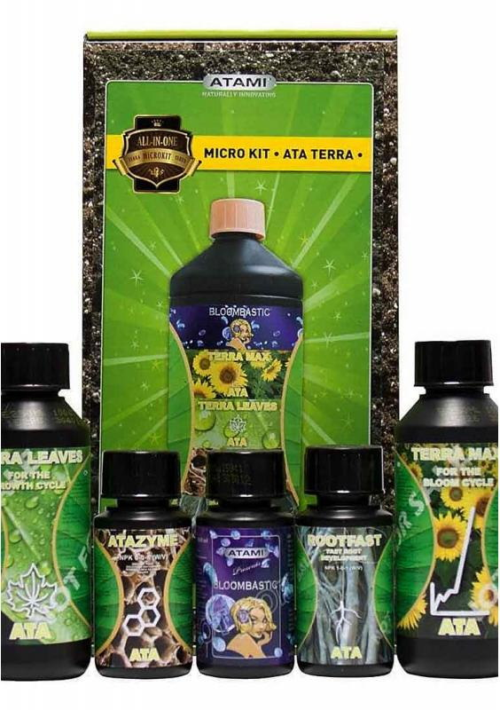
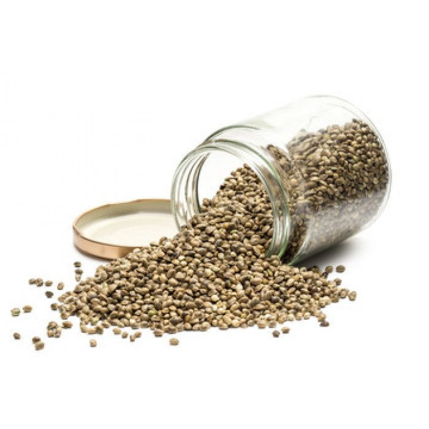

Nuestro Productos
Nuestra crema
El cannabis ayuda a aliviar el dolor al suprimir las citocinas proinflamatorias que son liberadas cuando nuestros cuerpos reciben daño. Por ejemplo, cuando la artritis se instala, las articulaciones se muelen entre sí, lo cual resulta exactamente tan doloroso como suena. La respuesta natural del cuerpo ante esto es la inflamación, pero al suprimir esas citocinas proinflamatorias conseguimos aliviar el dolor. Además, hay estudios que indican que el uso de cremas de cannabis hasta puede ayudar a prevenir daños neurológicos en las zonas aplicadas. Para la gente que la aplica en las rodillas, tobillos y pies, esto puede ayudar a retrasar neuropatías y dentro de todo contribuir a sentirse mejor. Y como si esto fuera poco, mucha gente que utiliza el aceite de cannabis en las articulaciones se ha encontrado con que no solo se reduce el dolor, sino que el daño es revertido. Así que en vez de simplemente reducir los síntomas, los cannabinoides ayudan a sanar.
Nuestro Aceite
El uso medicinal del cannabis tiene una tradición milenaria y fue habitual, hasta comienzos del siglo pasado. Aunque por diferentes motivos la planta fue extraída de la Farmacopea, en los últimos tiempos, han ganado popularidad los preparados de aceite, que consisten en una extracción concentrada de su flor, de la que se obtiene fundamentalmente, el cannabidiol (CBD). El CBD es un químico que actúa en el sistema nervioso central y, por lo tanto, es un psicotrópico. Sin embargo, no contiene tetrahidrocannabinol (THC), el ingrediente psicoactivo de la marihuana.
Semillas feminizadas
Son muchos los beneficios y las ventajas que caracterizan al cultivo de semillas de cannabis feminizadas, habiéndose convertido en las más comercializadas, demandadas y empleadas por la gran mayoría de cannabicultores, tanto noveles como expertos, así como para autocultivo y con fines comerciales. Uno de los principales motivos de su popularidad es la facilidad de cultivo, pues no es necesario realizar ninguna labor de destacar los machos para garantizar la hegemonía femenina dentro del cultivo. Además, debido a este claro dominio del mercado durante las últimas tres décadas, actualmente el catálogo de semillas feminizadas, también conocidas como marihuana sin semilla, es mucho más extenso y variado que el de semillas regulares. Se caracterizan por un desarrollo estable y homogéneo, permitiendo aprovechar todo el espacio del cultivo, tanto en carpas, salas, invernaderos o al aire libre. También, cabe poner en valor que se pueden encontrar en diferentes formatos, en relación a su código genético, composición química y morfología, destacando las variedades autoflorecientes y las ricas en CBD, ideales para fines terapéuticos.
Fertilizantes
Además de un suelo de calidad, los fertilizantes son fundamentales para maximizar las cosechas de tus plantas de marihuana. Existe una gran variedad de abonos orgánicos y químicos, y hay muchas formas de preparar el tuyo propio en casa. Conocer las diferencias entre todas estas opciones te puede ayudar a decidir cuál es el más adecuado para ti. A la hora de determinar cuáles son los mejores fertilizantes para tu proyecto de cultivo de marihuana, hay que tener en cuenta muchos aspectos. Al igual que otras plantas, el cannabis necesita nutrientes esenciales para desarrollarse. Estos macronutrientes clave son el nitrógeno (N), el fósforo (P) y el potasio (K), que conjuntamente se conocen como NPK. Existen muchos productos que contienen una mezcla de macro y micronutrientes que estimulan el crecimiento de varias formas. Con tantas opciones disponibles, es importante saber cuál es la más adecuada para tu cultivo.
Kit para cultivo
Además de las semillas de marihuana, tan necesarias para poder dar comienzo al proceso de cultivo, prácticamente todos nuestros kits de cultivo incluyen, entre otros, los siguientes productos: armario de cultivo, un extractor de aire, un temporizador, un termo-higrómetro, una bombilla de 400 W, un balastro, un reflector y un cable con enchufe. Se trata, sin duda alguna, de la mejor opción a la hora de empezar un cultivo puesto que supone un ahorro considerable de tiempo, esfuerzo y dinero. Por un lado, te facilitamos la tarea de pensar y decidir qué productos elegir para cultivar tus plantas de cannabis favoritas. No tienes por qué preocuparte ya que los mejores productos de nuestro catálogo conforman cada uno de estos kits de cultivo. Por otro lado, si te decides por adquirir alguno de estos kits con armario de cultivo completos,
Semillas autoflorecientes
Las semillas autoflorecientes, también llamadas semillas de marihuana automáticas o autos, tienen como característica principal que no dependen del fotoperiodo, es decir, son plantas de marihuana que empiezan a florecer automáticamente independientemente de las horas de luz recibidas. Por el contrario, la mayoría de variedades, tanto semillas regulares de cannabis como feminizadas, necesitan una reducción de las horas de luz para empezar y llevar a cabo su ciclo de floración. Estas semillas son el fruto de cruzar genéticas regulares o feminizadas con genéticas Rudelaris o con otras variedades autoflorecientes.